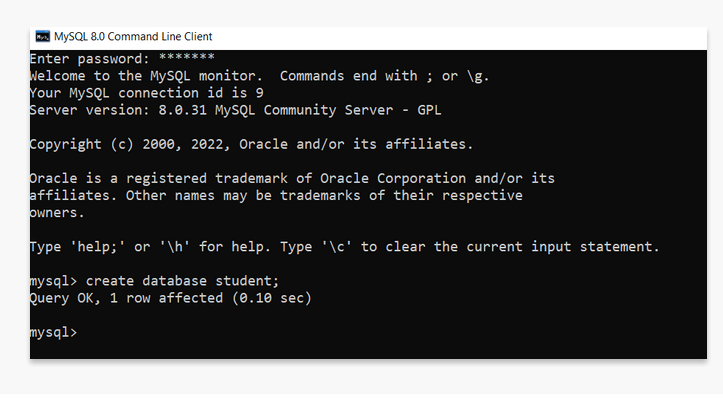
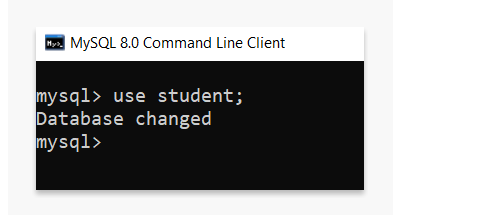
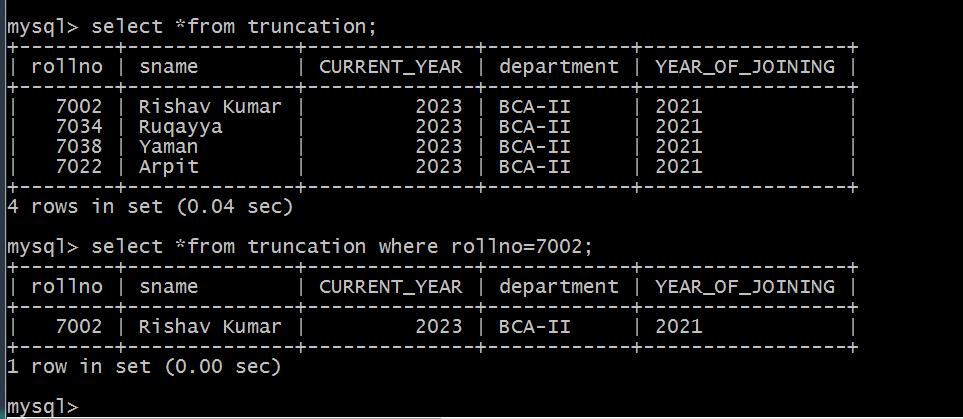
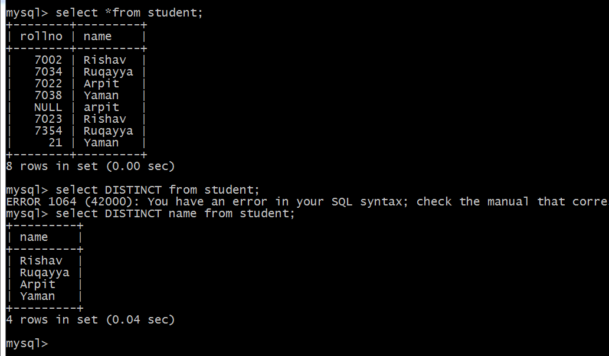

MYSQL INTRODUCTION
MySQL is a system that helps store and manage data efficiently. Database generally stores data in a structured fashion. It is written in C and C++, and it has been tested with a variety of compilers to check for bugs and inconsistencies.
Let us understand some of the main features associated with MySQL:
Open-Source
MySQL is open-source, which means this software can be downloaded, used and modified by anyone. It is free-to-use and easy-to-understand. The source code of MySQL can be studied, and changed based on the requirements. It uses GPL, i.e. GNU General Public license which defines rules and regulations regarding what can and can't be done using the application.Quick
Quick and Reliable MySQL stores data efficiently in the memory ensuring that data is consistent, and not redundant. Hence, data access and manipulation using MySQL is quick.Scalable
Scalability refers to the ability of systems to work easily with small amounts of data, large amounts of data, clusters of machines, and so on. MySQL server was developed to work with large databases.Datatypes
It contains multiple data types such as unsigned integers, signed integers, float (FLOAT), double (DOUBLE), character (CHAR), variable character (VARCHAR), text, blob, date, time, datetime, timestamp, year, and so on.Character Sets
It supports different character sets, and this includes latin1 (cp1252 character encoding), German, Ujis, other Unicode character sets and so on.Secure
It provides a secure interface since it has a password system which is flexible, and ensures that it is verified based on the host before accessing the database. The password is encrypted while connecting to the server.Support for large databases
It comes with support for large databases, which could contain about 40 to 50 million records, 150,000 to 200,000 tables and up to 5,000,000,000 rows.Client and Utility Programs
MySQL server also comes with many client and utility programs. This includes Command line programs such as 'mysqladmin' and graphical programs such as 'MySQL Workbench'. MySQL client programs are written in a variety of languages. Client library (code encapsulated in a module) can be written in C or C++ and would be available for clients that have C bindings.MySQL Create Command
MySQL implements a database as a directory that stores all files in the form of a table. It allows us to create a database mainly in two ways
1. MySQL Command Line Client
2. MySQL Workbench
MySQL Command Line Client
We can create a new database in MySQL by using the CREATE DATABASE statement with the below syntax:
CREATE DATABASE [IF NOT EXISTS] database_name
[CHARACTER SET charset_name]
[COLLATE collation_name];

The parameter descriptions of the above syntax are as follows:
database_name It is the name of a new database that should be unique in the MySQL server instance. The IF NOT EXIST clause avoids an error when we create a database that already exists.
charset_name It is optional. It is the name of the character set to store every character in a string. MySQL database server supports many character sets. If we do not provide this in the statement, MySQL takes the default character set.
collation_name It is optional that compares characters in a particular character set.
MySQL Select Command
SELECT Database is used in MySQL to select a particular database to work with. This query is used when multiple databases are available with MySQL Server.
You can use SQL command USE to select a particular database.
Syntax :
USE database_name;
Example :

MySQL Constraints
The constraint in MySQL is used to specify the rule that allows or restricts what values/data will be stored in the table. They provide a suitable method to ensure data accuracy and integrity inside the table. It also helps to limit the type of data that will be inserted inside the table. If any interruption occurs between the constraint and data action, the action is failed.
Types of Contraints:
1. Column Level Constraints: These constraints are applied only to the single column that limits the type of particular column data.
2. Table Level Constraints: These constraints are applied to the entire table that limits the type of data for the whole table.
Some of the constraints in MySQL are as follows:
- UNIQUE Constraint This constraint ensures that all values inserted into the column will be unique. It means a column cannot stores duplicate values. MySQL allows us to use more than one column with UNIQUE constraint in a table.
- NOT NULL Constraint This constraint specifies that the column cannot have NULL or empty values. The below statement creates a table with NOT NULL constraint.
- DEFAULT Constraint This constraint is used to set the default value for the particular column where we have not specified any value. It means the column must contain a value, including NULL.
- PRIMARY KEY Constraint This constraint is used to identify each record in a table uniquely. If the column contains primary key constraints, then it cannot be null or empty. A table may have duplicate columns, but it can contain only one primary key. It always contains unique value into a column. br
- Foreign Key Constraint This constraint is used to link two tables together. It is also known as the referencing key. A foreign key column matches the primary key field of another table. It means a foreign key field in one table refers to the primary key field of another table.
- CHECK Constraint It controls the value in a particular column. It ensures that the inserted value in a column must be satisfied with the given condition. In other words, it determines whether the value associated with the column is valid or not with the given condition.
MySQL WHERE clause
Where is used with SELECT, INSERT, UPDATE and DELETE clause to filter the results. It specifies a specific position where you have to do the operation.
Example :

MySQL DISTINCT statement
DISTINCT is used to remove duplicate records from the table and fetch only the unique records. The DISTINCT clause is only used with the SELECT statement.
Example :
